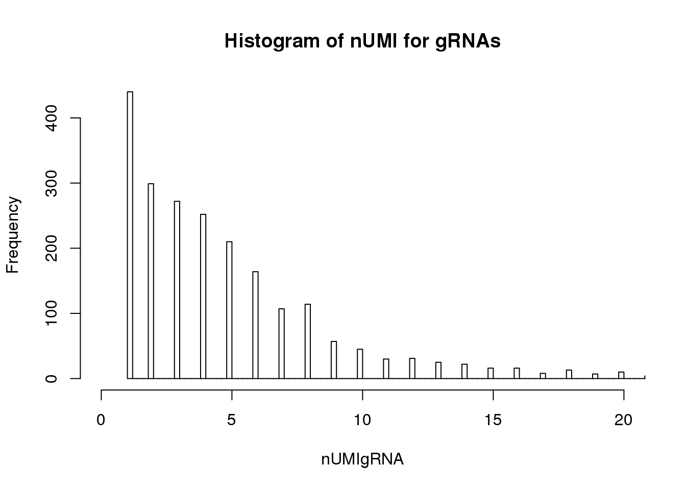

Quality_metrics
Siming Zhao
Last updated: 2019-03-26
Checks: 4 2
Knit directory: cropseq/
This reproducible R Markdown analysis was created with workflowr (version 1.2.0). The Report tab describes the reproducibility checks that were applied when the results were created. The Past versions tab lists the development history.
The R Markdown file has unstaged changes. To know which version of the R Markdown file created these results, you’ll want to first commit it to the Git repo. If you’re still working on the analysis, you can ignore this warning. When you’re finished, you can run wflow_publish to commit the R Markdown file and build the HTML.
Great job! The global environment was empty. Objects defined in the global environment can affect the analysis in your R Markdown file in unknown ways. For reproduciblity it’s best to always run the code in an empty environment.
The command set.seed(20181119) was run prior to running the code in the R Markdown file. Setting a seed ensures that any results that rely on randomness, e.g. subsampling or permutations, are reproducible.
Great job! Recording the operating system, R version, and package versions is critical for reproducibility.
- Alanmatrix
To ensure reproducibility of the results, delete the cache directory Quality_metrics_cache and re-run the analysis. To have workflowr automatically delete the cache directory prior to building the file, set delete_cache = TRUE when running wflow_build() or wflow_publish().
Great! You are using Git for version control. Tracking code development and connecting the code version to the results is critical for reproducibility. The version displayed above was the version of the Git repository at the time these results were generated.
Note that you need to be careful to ensure that all relevant files for the analysis have been committed to Git prior to generating the results (you can use wflow_publish or wflow_git_commit). workflowr only checks the R Markdown file, but you know if there are other scripts or data files that it depends on. Below is the status of the Git repository when the results were generated:
Ignored files:
Ignored: .Rproj.user/
Ignored: analysis/Quality_metrics_cache/
Ignored: analysis/figure/gRNA-EdgeR-QLF.Rmd/
Ignored: analysis/figure/gRNA-EdgeR-QLF_permutation.Rmd/
Ignored: data/gRNA_edgeR-QLF/
Ignored: data/gRNA_edgeR-QLF_811d97b/
Ignored: data/gRNA_edgeR-QLF_fba9768/
Untracked files:
Untracked: analysis/MASTcpmdet.Rmd
Unstaged changes:
Modified: analysis/Quality_metrics.Rmd
Modified: code/DE_functions.R
Modified: code/WIP_2019.R
Note that any generated files, e.g. HTML, png, CSS, etc., are not included in this status report because it is ok for generated content to have uncommitted changes.
These are the previous versions of the R Markdown and HTML files. If you’ve configured a remote Git repository (see ?wflow_git_remote), click on the hyperlinks in the table below to view them.
| File | Version | Author | Date | Message |
|---|---|---|---|---|
| Rmd | 01a5914 | simingz | 2019-02-14 | permutation |
| html | 01a5914 | simingz | 2019-02-14 | permutation |
| Rmd | 49ecf6e | simingz | 2018-12-16 | explore filtering |
| Rmd | 6b6ebde | simingz | 2018-12-14 | fix Xin’s comment for qc |
| html | 6b6ebde | simingz | 2018-12-14 | fix Xin’s comment for qc |
| Rmd | 8ce79ed | simingz | 2018-12-05 | de_anlysis |
| html | 8ce79ed | simingz | 2018-12-05 | de_anlysis |
| Rmd | 275d5d8 | simingz | 2018-12-02 | qc |
| html | 275d5d8 | simingz | 2018-12-02 | qc |
| Rmd | f5dda86 | simingz | 2018-12-02 | qc |
| html | f5dda86 | simingz | 2018-12-02 | qc |
| Rmd | 8754cad | szhao06 | 2018-12-02 | qc |
| html | 8754cad | szhao06 | 2018-12-02 | qc |
| Rmd | c206c9d | szhao06 | 2018-12-01 | qc |
| Rmd | fdd5647 | szhao06 | 2018-12-01 | qc |
| html | fdd5647 | szhao06 | 2018-12-01 | qc |
Number of guide RNAs per cell
- number of cells with guide RNA reads =1 From Siwei’s cellranger run:
library(Matrix)
matrix_dir = "/project2/xinhe/simingz/CROP-seq/data_from_Siwei/Xin_scRNA_seq_05Nov2018/filtered_gene_bc_matrices/CellRanger_index/"
matrix.path <- paste0(matrix_dir, "matrix.mtx")
dm <- readMM(file = matrix.path)
dm1 <- tail(dm,n=76)
length(colSums(dm1)[colSums(dm1)==1])[1] 440From Alan’s cellranger run:
matrix_dir1 = "/project2/xinhe/simingz/CROP-seq/NSC0507_cellranger/outs/filtered_gene_bc_matrices/cellranger_ref/"
matrix.path1 <- paste0(matrix_dir1, "matrix.mtx")
mattemp1 <- readMM(file = matrix.path1)
mattemp11 <- tail(mattemp1,n=76)
length(colSums(mattemp11)[colSums(mattemp11)==1])[1] 266matrix_dir2 = "/project2/xinhe/simingz/CROP-seq/NSC08_cellranger/outs/filtered_gene_bc_matrices/cellranger_ref/"
matrix.path2 <- paste0(matrix_dir2, "matrix.mtx")
mattemp2 <- readMM(file = matrix.path2)
mattemp21 <- tail(mattemp2,n=76)
length(colSums(mattemp21)[colSums(mattemp21)==1])[1] 190Note: in Alan’s original analysis conversion from h5 to csv step didn’t seem to work properly. if starting from matrix.mtx files. Siwei and Alan’s analyses gave the same results. So from now on, we will always start from Siwei’s matrix.mtx file.
- distribution of gRNA types per cell
barcode.path <- paste0(matrix_dir, "barcodes.tsv")
features.path <- paste0(matrix_dir, "genes.tsv")
feature.names = read.delim(features.path, header = FALSE,
stringsAsFactors = FALSE)
barcode.names = read.delim(barcode.path, header = FALSE,
stringsAsFactors = FALSE)
colnames(dm) = barcode.names$V1
rownames(dm) = feature.names$V2
dm1 <- tail(dm,n=76)
hist(apply(dm1, 2, function(x) length(x[x>0])),breaks=300,xlim=c(0,15),ylim=c(0,2500), main="Distribution of number of gRNA types per cell", xlab= "# gRNA type per cell")
number of cells targeted for each locus
library(dplyr)
dm1df <- as.data.frame(as.matrix(dm1))
dm1df$label = sapply(strsplit(rownames(dm1),split = '_'), function(x){x[1]})
dm1dfagg = as.data.frame(dm1df %>% group_by(label) %>% summarise_all(funs(sum)))
row.names(dm1dfagg) =dm1dfagg$label
dm1dfagg$label =NULL- number of cells targeted for each locus
ncell <- apply(dm1dfagg,1, function (x) length(x[x>=1]))
barplot(ncell,las=2,cex.lab=1, main= "# cells targted for each locus")
- number of cells only targeted for that locus
# Singletons (cells with only 1 gRNA)
nlocus <- apply(dm1dfagg, 2, function (x) length(x[x>=1]))
hist(nlocus,breaks=100, main="number of targeted locus each cell")
dm1dfagg.uni= dm1dfagg[,nlocus==1]
ncell.uni <- apply(dm1dfagg.uni,1, function (x) length(x[x>=1]))
barplot(ncell.uni,las=2,cex.lab=1,main= "# cells uniquely targted for each locus")
UMI count distribution for cells with unique targeted locus
# Singletons (cells with only 1 targeted locus)
dm.uni <- dm[,nlocus==1]
nUMI <- colSums(dm.uni)
hist(nUMI,breaks=100,xlim=c(0,1e5))
UMI count distribution for gRNAs in cells with unique targeted locus
# Singletons (cells with only 1 targeted locus)
nUMIgRNA <- colSums(tail(dm.uni,76))
hist(nUMIgRNA,breaks=500,xlim=c(0,20), main = "Histogram of nUMI for gRNAs") 
Prepare data for differential gene expression
Rows with duplicated gene names will be removed
table(rownames(dm))[table(rownames(dm))>1]
AJ271736.10 AKAP17A ASMT ASMTL CD99
2 2 2 2 2
CRLF2 CSF2RA DHRSX GTPBP6 IL3RA
2 2 2 2 2
IL9R KLHDC7B MIR1253 MIR3179-1 MIR3179-3
2 2 2 2 2
MIR3180-1 MIR3180-2 MIR3180-3 MIR3180-4 MIR3690
2 2 2 2 2
MIR6089 NCRNA00102 NCRNA00106 P2RY8 PLCXD1
2 2 2 2 2
PPP2R3B RP11-309M23.1 RP13-297E16.4 RP13-297E16.5 RP13-465B17.5
2 2 2 2 2
SHOX SLC25A6 SPRY3 VAMP7 ZBED1
2 2 2 2 2 dm <- dm[!(rownames(dm) %in% names(table(rownames(dm))[table(rownames(dm))>1])), ]
save(dm,dm1dfagg,nlocus, file="data/DE_input.Rd")Parameters used:
for a cell to be considered targeted uniquely at a locus: total read counts for the 3 gRNAs targeting that locus >1, total read counts for gRNA of other locus=0.
negative control: neg_EGFP and neg_CTRL are pooled together.
cells to be exluded due to low total UMI count: no filtering
sessionInfo()R version 3.5.1 (2018-07-02)
Platform: x86_64-pc-linux-gnu (64-bit)
Running under: Scientific Linux 7.4 (Nitrogen)
Matrix products: default
BLAS/LAPACK: /software/openblas-0.2.19-el7-x86_64/lib/libopenblas_haswellp-r0.2.19.so
locale:
[1] LC_CTYPE=en_US.UTF-8 LC_NUMERIC=C
[3] LC_TIME=en_US.UTF-8 LC_COLLATE=en_US.UTF-8
[5] LC_MONETARY=en_US.UTF-8 LC_MESSAGES=en_US.UTF-8
[7] LC_PAPER=en_US.UTF-8 LC_NAME=C
[9] LC_ADDRESS=C LC_TELEPHONE=C
[11] LC_MEASUREMENT=en_US.UTF-8 LC_IDENTIFICATION=C
attached base packages:
[1] stats graphics grDevices utils datasets methods base
other attached packages:
[1] dplyr_0.7.8 Matrix_1.2-15
loaded via a namespace (and not attached):
[1] Rcpp_1.0.0 knitr_1.20 bindr_0.1.1 whisker_0.3-2
[5] magrittr_1.5 workflowr_1.2.0 tidyselect_0.2.5 lattice_0.20-38
[9] R6_2.3.0 rlang_0.3.1 stringr_1.4.0 tools_3.5.1
[13] grid_3.5.1 git2r_0.23.0 htmltools_0.3.6 yaml_2.2.0
[17] rprojroot_1.3-2 digest_0.6.18 assertthat_0.2.0 tibble_2.0.1
[21] crayon_1.3.4 bindrcpp_0.2.2 purrr_0.3.2 fs_1.2.6
[25] glue_1.3.0 evaluate_0.12 rmarkdown_1.10 stringi_1.3.1
[29] pillar_1.3.1 compiler_3.5.1 backports_1.1.2 pkgconfig_2.0.2